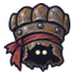

ทหารเกราะสนิม · ร่างเกราะทอง
มอนธาตุอมตะ Lv 16–22
เจอที่
| แมพ | โซน | Lv | ภูมิภาค |
|---|---|---|---|
| สนามรบเก่ากลางทุ่ง | 16–22 | ป่ากองไฟ |
ค่าสถานะตามเลเวล
| Lv | HP | ATK | DEF | MDEF | EXP | Job |
|---|---|---|---|---|---|---|
| 16 | 4,191 | 43–65 | 12 | 3 | 55 | 41 |
| 19 | 4,580 | 48–72 | 14 | 3 | 62 | 47 |
| 22 | 4,748 | 48–73 | 16 | 4 | 70 | 53 |
ตีด้วยธาตุไหนดี
แรงขึ้น: ศักดิ์สิทธิ์ ×1.5 ไฟ ×1.25
เบาลง: พิษ ×0 มืด ×0 อมตะ ×0
วัตถุดิบที่ดรอป
| ของ | โอกาส | |
|---|---|---|
| ป้ายยศขึ้นสนิม | 82% | 1 ชิ้น (15% ได้ 2) |
อุปกรณ์ที่ดรอป (2)
| ของ | โอกาส |
|---|---|
 สนับมือถุงมือเกราะสนิม | 0.5% |
| โล่ไม้กลม | 0.5% |
สกิล
หนามสะท้อน (Lv 25+) · หนามสะท้อน (Lv 60+) · ทุบพื้น (Lv 60+)